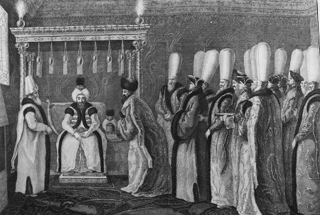

Sultan III. Mustafa, veda eden elçi Charles de Vergennes'i kabul ediyor (17 Aralık 1768) Frederick Calvert (Baron Baltimore), A Tour to the East in the years 1763 and 1764. With remarks on the City of Constantinople and the Turks, Londra, 1767, çizim: Francis Smith, 1769, bakır baskı gravür (Ayşe Yetişkin Kubilay koleksiyonu).